自制复古主机的图形方案：PPU的现代出路
2026年09月03日 星期四上一篇收集整理了早期家用电脑与游戏机中的图像视频芯片，当时的目的是为自制怀旧风格家用电脑做准备。这几年继续收集了一些资料，关注点从"历史上有什么芯片"转向了"今天实际动手做，图形部分有哪些可行路线"。本篇是续篇，记录这些方案。
一、先想清楚：PPU到底在做什么
以红白机的PPU（2C02）为例，它的核心工作可以拆成几块：
| 模块 | 职责 |
|---|---|
| 时序生成器 | 341点×262扫描线（NTSC），21.477MHz时钟，产生HBlank/VBlank |
| 背景渲染器 | 每8周期取一次名称表→属性表→图案表，移位寄存器串行出像素 |
| 精灵渲染器 | 每扫描线预扫描64个OAM条目，最多取8个，各自维护位移寄存器 |
| 像素合成器 | 背景/精灵优先级仲裁，查32字节调色板RAM |
| CPU接口 | 8个寄存器（\(2000-\)2007），双字节锁存，OAM DMA |
理解了这个职责划分，后面的每条路线都可以看成是"用什么手段重新实现这几块"。
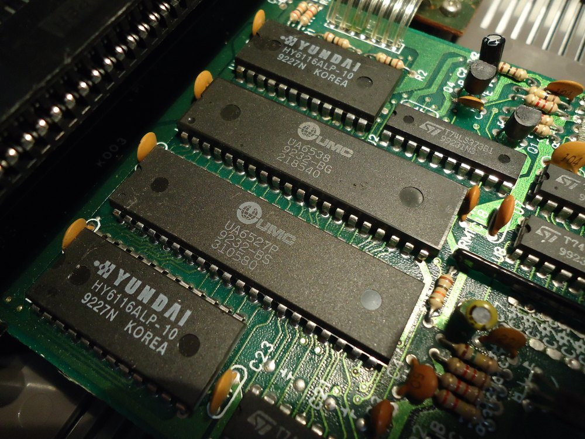
当年PPU的功能简单到可以被整体仿制：联华电子（UMC）的UA6527P（仿2A03 CPU）和UA6538（仿2C02 PPU）就是当年海量红白兼容机的标准芯片组，上图是一块兼容机主板，两颗UMC芯片居中、两颗现代（Hyundai）RAM在侧。后来这些仿制芯片进一步缩成单颗牛屎封装的NES-on-a-Chip。这也从侧面说明，用今天的FPGA复刻PPU是完全现实的。（图：Wikimedia Commons，Socram8888摄，CC BY 3.0）
二、路线一：FPGA复刻PPU
这是目前最主流的路线。MiSTer项目上的NES、SNES、Genesis核心，本质上都是用Verilog/VHDL把当年的芯片重写一遍。
用FPGA实现NES PPU的要点：
- 时钟用21.477272MHz（NTSC色副载波的6倍）
- 背景渲染是经典的四级流水：名称表字节→属性字节→图案低位→图案高位，每8周期一个Tile
- 滚动用Loopy寄存器（15位VRAM地址）实现，精细X滚动单独3位
- 精灵分两阶段：扫描线间隙做OAM评估（64选8），可见区逐精灵移位输出
- 调色板查表后直接转RGB输出VGA/HDMI，不必模拟NTSC复合视频
常见的坑：精灵0命中的周期级时机、调色板镜像（\(3F10镜像到\)3F00）、非VBlank期间读$2007返回缓冲值。NES游戏对PPU的周期级行为非常敏感，粗糙的实现能亮屏但跑不对游戏。
FPGA路线的天花板远不止复刻老芯片，后面第九节会专门讲一个把FPGA GPU做到现代水平的项目。
三、路线二：离散逻辑+Blitter——GameTank的答案
GameTank提供了一个完全不同的思路：不做PPU，做帧缓冲加Blitter。
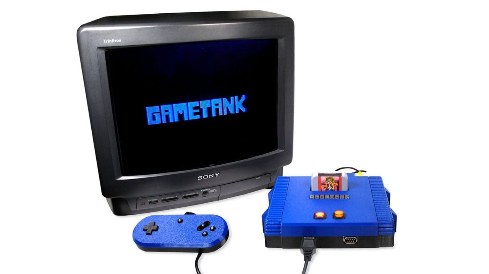
| 项目 | 配置 |
|---|---|
| CPU | W65C02S @ 3.5MHz |
| 帧缓冲 | 128×128，每像素1字节，双缓冲，共用一片32KB双口SRAM |
| 图形加速 | Blitter硬件拷贝引擎，3.5MB/s，支持透明色与翻转 |
| 图形源 | 512KB RAM存放Sprite/Tile数据 |
| 输出 | NTSC复合视频，硬编码200色调色板 |
| 音频 | 第二颗W65C02S @ 14MHz + 4KB RAM + DAC |
| 逻辑实现 | 全部74系列通孔芯片，无FPGA、无MCU |
它的设计哲学是：分辨率足够小时（128×128只有16KB），每帧完全重绘背景的成本很低，一颗高速Blitter就能替代传统PPU的背景Tile解码器和精灵评估器。硬件大幅简化，代价是CPU要主动组织重绘，不像NES那样配置好寄存器就不管了。
这个架构更接近Atari Lynx而非NES。好处是所有芯片都能在Digi-Key、Mouser买到全新的通孔件，整机可以纯手工焊出来。
四、路线三：现代"现成PPU"——Bridgetek EVE
如果想要"芯片在售、功能类似PPU但强得多"的方案，目前唯一对口的商品芯片是Bridgetek（FTDI）的EVE系列（Embedded Video Engine）。
| 型号 | 代际 | 分辨率 | 备注 |
|---|---|---|---|
| FT810-FT813 | EVE2 | 800×600 | 立创/贸泽有售 |
| BT815/BT816 | EVE3 | 800×600 | 增加ASTC纹理压缩、外部NOR Flash |
| BT817/BT818 | EVE4 | 1280×800 | 有AEC-Q100车规级 |
EVE是显示列表（Display List）架构：MCU通过SPI发送高级命令（"在X,Y绘制句柄3的位图"），芯片内部自动完成渲染、合成、时序生成和输出，主控完全不碰像素。理念上和"CPU写OAM、PPU自动渲染"高度相似，只是规模大了数十倍，还附带音频PWM输出和触摸屏控制。要注意的几点实际约束：显示列表有2048项的上限（FT81x），裸片是QFP封装不好手工焊，一般人买的是带屏模块（Riverdi、New Haven等，$30-80），且EVE是3.3V器件，接5V的6502系统需要电平转换。
这个"弱主控+SPI+专用图形引擎"的模式并非纸面设想，它有量产级的先例：James Bowman的Gameduino 2/3就是FT800/FT810配Arduino（ATmega328 @ 16MHz），Kickstarter量产了三代，主控算力和W65C02S是同一量级。Bowman还写了本《The Gameduino 2: Tutorial, Reference and Cookbook》，系统讲解EVE的显示列表编程，作者官网有免费PDF。
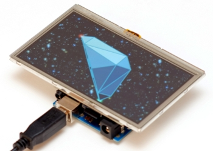
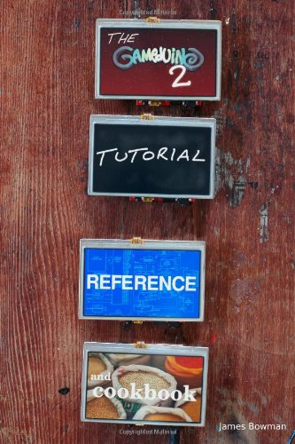
公平地说，6502和EVE这两个圈子目前没什么交集：EVE的生态几乎全在Arduino/ESP32/STM32这些现代MCU上，我没找到6502+EVE的公开完成项目。但6502这边用65C22 VIA软件模拟SPI（接SD卡）是自制机社区的标准操作，两个半边各自都成熟，拼起来没有原理性障碍。
用它配W65C02S做游戏机的唯一门槛是6502没有SPI控制器，三种解法：
- 65C22 VIA软件模拟SPI：约50-200Kbps，原型可用，一帧几百字节的显示列表勉强够30fps
- 一颗廉价CPLD做SPI桥映射到6502的I/O空间：1-4Mbps，CPU几乎零负担，推荐
- W65C816S或FPGA总线桥做QSPI：过度设计
一个典型复古游戏场景（背景层+20个精灵+UI文字）每帧显示列表约500字节，SPI到1Mbps以上就毫无压力。这条路线的开发难度远低于FPGA和离散逻辑——虽然6502+EVE还没什么人踩过，但有Gameduino三代量产产品垫底的架构模式，我认为是新人最值得尝试的组合。
五、路线四：拆机VDP
坚持要用"真·VDP"的话，只能淘拆机件。综合性能、文档和可获得性，排序如下：
| 芯片 | 用于 | 评价 |
|---|---|---|
| Yamaha V9958 | MSX2+/Turbo R | 首选。8位时代最强量产VDP之一，512×424、硬件滚动、19268色YJK模式、无每线精灵闪烁限制；有官方数据手册 |
| Yamaha V9938 | MSX2 | V9958的前代，拆机件更多更便宜，无YJK和水平滚动 |
| TI TMS9918A | TI-99/4A、ColecoVision、MSX1 | VDP鼻祖，但几乎所有指标弱于NES PPU（16色、每线4精灵），只适合教学 |
| Sega 315-5313 | MD | 性能强，但无官方文档、QFP难拆焊、期待68000级总线时序，DIY风险高 |
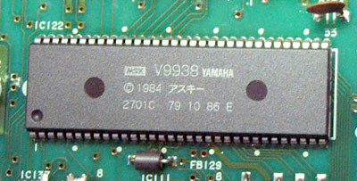
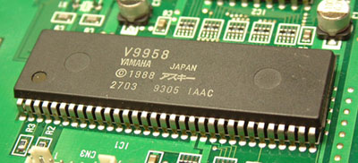
V9958/V9938是标准并行总线外设，6502可以直接读写寄存器，不需要SPI桥。注意它们不集成显存，需外接44256/41464等DRAM。买的时候建议买仍焊在子板上的拆机件，比裸片好处理。这条路的可行性也有实物先例：有人给C64做过完整的V9958显卡（开源硬件，插扩展槽直接用），RC2014社区也有现成的V99x8视频模块套件。
六、为什么街机芯片不要碰
街机走的是另一条路：没有通用VDP，全是定制ASIC。
- Capcom CPS1的Ricoh CPS-A-01：无文档，故障率高，社区至今还在用FPGA逆向重建
- Sega System 16的YM7101：本质上是MD VDP的街机增强版，但拆机件几乎绝迹
- SNK Neo Geo的LSPC2-A2+PRO-B0芯片组：最激进的设计——没有硬件背景层，一切画面（包括背景）全部由垂直精灵条带拼成，配4个行缓冲实现无闪烁高密度输出，380个精灵、4096色同屏。理念惊人，但整套芯片组依赖专属的VRAM/ROM体系，无法拆出来单用
定制ASIC没有数据手册、时序复杂、引脚多，死了还没处买替换件，个人DIY不要碰。
七、岔路：把2D精灵掰成四边形——世嘉土星的3D
提到"用2D硬件凑3D"，土星是最值得单说的案例。它的VDP1根本不画三角形：它画的是"变形精灵"（Distorted Sprite）——把一张纹理贴图的2D精灵扭曲成任意四点围成的四边形。土星游戏里所有的"多边形"都是这种四边形精灵。几何部分（变换、光照、排序）全部靠双SH-2软件完成，VDP1只负责填充。
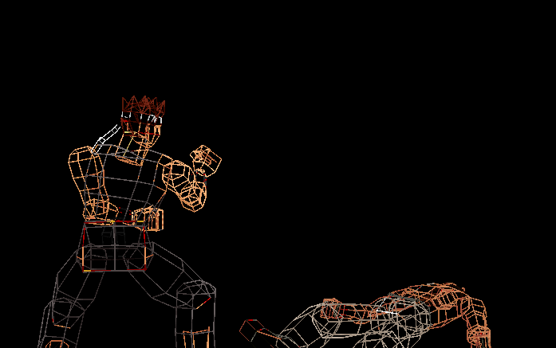
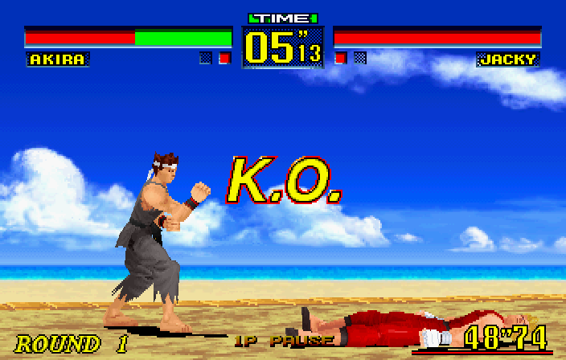
上面两张图是同一个例子（《VR战士Remix》，1995）：去掉纹理后，角色模型完全由四边形拼成；VDP1把纹理分别扭曲贴进每个四边形，再加上VDP2绘制的2D背景层，就成了下面的最终画面。（截图来自copetti.org的土星架构分析）
这个架构带来一串连锁反应：
- 没有Z缓冲，遮挡关系靠CPU排序（画家算法），复杂场景容易出错
- 四边形不共面会扭曲，所以建模师得刻意把模型拆得规整
- 没有硬件裁剪，顶点跑出屏幕外精灵会被错误拉伸，需要软件预裁剪
- 半透明做不好，大量游戏用棋盘格网纹（Mesh）假装半透明
有讽刺意味的是：世嘉自家街机（Model 1/2）用的是真多边形硬件，到了家用机反而退回精灵变形路线——这也是土星3D表现力输给PS1的结构性原因之一。
走类似"2D硬件凑3D"路线的还有这些：
| 平台 | 手法 | 备注 |
|---|---|---|
| 3DO | CEL引擎画四边形Cel，同样无三角形、无Z缓冲 | 与土星思路最接近 |
| Sega 32X | 帧缓冲+双SH-2软件渲染 | 硬件只管出图，3D全靠CPU |
| Super Scaler街机 | 硬件缩放/旋转大量精灵模拟纵深 | 《太空哈利》《Out Run》，伪3D先声 |
| SNES Mode 7 | 单层背景仿射变换（旋转缩放透视） | 《F-Zero》《马力欧赛车》的地面 |
| GBA仿射层 | Mode 7的正统传人，且每扫描线可改矩阵 | 见后文第十节 |
| Neo Geo | 全精灵拼背景 | 见上一节，虽不做3D但理念同源 |
它们的共同点是：硬件只提供2D原语（精灵、背景层），第三维靠软件或玩家脑补。这条岔路在PS1的"GTE算几何+GPU画三角形"组合出现后就被终结了——真多边形光栅器一旦廉价到能进家用机，变形精灵就失去了存在的理由。
八、CPU搭配：6502、68000与SuperH
图形方案定了，主控CPU的选择也有几条有趣的线索。
6502与68000是师出同门的两个极端。 6502之父Chuck Peddle正是Motorola 6800项目的核心成员，因主张低价路线未果而出走MOS，用更少的晶体管做出了便宜一个数量级的6502。68000则是Motorola对高端市场的回应：16个32位寄存器、正交指令集，被戏称为"最像RISC的CISC"——但它确实是CISC（变长指令、微码、内存-内存操作一应俱全）。两者很少竞争，反而常在同一台机器里搭档：Commodore 64用6510，Amiga用68000配6502系列做键盘控制。
SuperH是纯日本血统。 日立1992年自研的32位RISC，最大特色是16位定长指令换来的高代码密度。SH-2（土星双核28.6MHz）、SH-4（Dreamcast 200MHz，128位FPU 1.4GFLOPS）两度登上游戏机巅峰；SH-5的64位尝试失败后，由瑞萨收编为汽车MCU主力，近年又以开源软核J-Core的形式获得新生。Dreamcast的SH-4浮点足够强，所以SEGA让CPU软做T&L、PowerVR2只管Tile光栅化——这再次印证了那个规律：几何处理（T&L）可以交给CPU，但像素填充必须有专门硬件。土星和DC如此，Voodoo如此，GBA的仿射层也如此。
68k今天还活着，但已是遗产状态。 桌面线68020→68060在90年代中输给PowerPC；嵌入式线却活了下来：Palm Pilot的DragonBall、至今仍在NXP供货的ColdFire（新客户已基本不推荐）。更活跃的是FPGA软核（TG68、FX68K，MiSTer的Amiga/Genesis核心底层就是它们）和Apollo Team的68080——Amiga的Vampire加速器卡上那颗超标量、带AMMX SIMD扩展的"现代68k"，算是"如果Motorola没放弃"的平行世界答案。
九、现代FPGA GPU的标杆：FuryGpu
FPGA路线的天花板案例是FuryGpu：一个人用近4年时间，在Xilinx Zynq UltraScale+（Kria SoM）上从零做了一块PCIe独立显卡，能跑Quake。
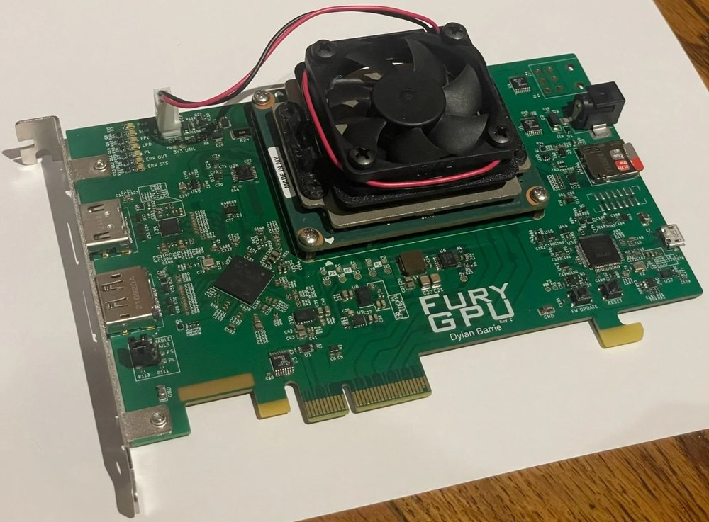
| 项目 | 规格 |
|---|---|
| 架构 | 固定功能Tile-Based光栅器，无可编程着色器 |
| 时钟 | 480MHz |
| 光栅器 | 4个并行Rasterizer，2×2 Quad |
| 纹理 | 每Rasterizer一个纹理单元，双线性、Mipmap；4路组相联512KB纹理缓存 |
| 主机接口 | PCIe + 自写Windows WDDM内核驱动 |
| API | 私有FuryGL，显式命令缓冲/队列提交，类Vulkan外壳+固定功能内核 |
几点值得记录的判断：
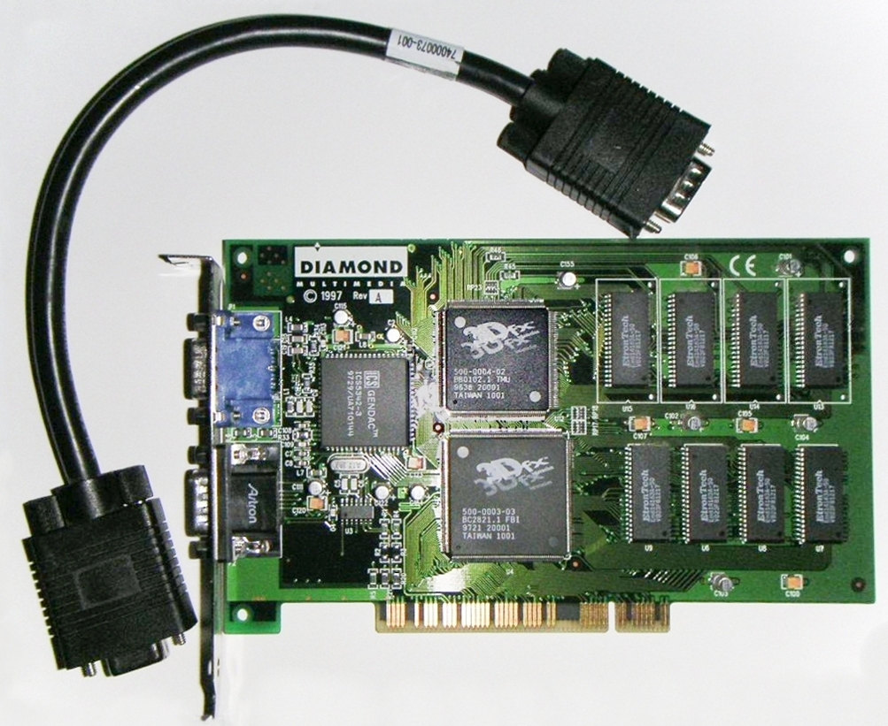
- 它是"超级Voodoo 1"的精神续作。 都是固定功能、无Shader、CPU软T&L+GPU硬光栅的分工；FuryGpu用fp32前端、Tile-Based架构和现代缓存设计弥补了FPGA效率劣势，Quake帧率与Voodoo 1在同一数量级。
- 它有WDDM驱动却显示不了Windows桌面。 DWM桌面合成依赖Direct3D可编程管线，固定功能GPU满足不了；WDDM驱动只是给硬件一个"合法身份"。有趣的是在Linux下反而容易：写一个最小DRM/KMS驱动暴露dumb buffer，GNOME会自动回退llvmpipe软渲染桌面，FuryGpu只当扫描输出用。
- 加硬件T&L很难且没必要。 硬件T&L直到1999年GeForce 256才出现（顺带一提，3dfx全系和Glide都从未有过硬件T&L；OpenGL规范也从不强制硬件T&L，软硬实现对应用透明）。FuryGpu的DSP资源已吃紧，目标游戏又是CPU软T&L时代的作品，加了纯属浪费。
- 真要用现代工艺造芯片也不是不行。 Voodoo 1是500nm/约100万晶体管，用SkyWater 130nm开源PDK走MPW，面积不到2mm²，赞助渠道下现金成本可低至几百美元——真正的门槛是RTL设计与验证，不是流片费。我个人出于好奇也询过国内MPW的价：IC教学渠道附带的MPW服务报价在十几、二十万人民币的样子，其他一些濒临淘汰制程的流片报价在8-10万，比SkyWater的赞助渠道贵不少，但和先进制程动辄百万级的掩膜费相比仍是小数目。这也是FuryGpu将来开源后最有趣的社区方向之一。
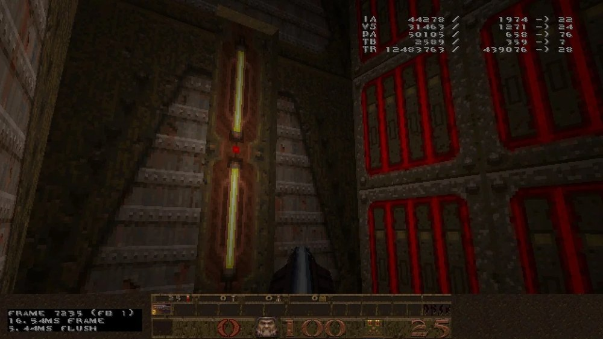
十、另一条参照系：集成化
掌机给了"没有独立VDP但功能更强"的范例。GBA把LCD控制器直接做进SoC，与ARM7共享内存总线：六种显示模式（Mode 0-2是Tile模式，最多4层背景且两层带仿射变换；Mode 3-5是帧缓冲位图模式）、128个硬件精灵、Alpha混合/亮度增减/窗口裁剪特效，再加上HBlank DMA逐扫描线改寄存器，能做出Mode 7式的伪3D。像素合成仍是纯硬件电路，DMA只负责搬运和更新寄存器。
PC那边则是"2D加速没有止步，而是被吞并"：DirectDraw时代的硬件Blitter（BitBLT、颜色键控、页翻转）在2000年后被统一着色器架构吸收——今天的2D界面全是"两个三角形贴纹理"交给3D管线零开销完成，再叠上DWM桌面合成、独立的视频编解码引擎和异步Copy Engine。当年独立的2D硬件能力并没有消失，只是藏进了看不见的地方。
十一、总结：怎么选
| 路线 | 硬件复杂度 | 开发难度 | 情怀分 | 适合谁 |
|---|---|---|---|---|
| FPGA复刻PPU | 中 | 高（周期级时序） | ★★★★★ | 想精确复现某台老机器 |
| 离散逻辑+Blitter（GameTank式） | 高（几十颗74芯片） | 中 | ★★★★★ | 想纯手工焊一台出来 |
| W65C02S + Bridgetek EVE | 低 | 低 | ★★★ | 想快速做出能玩的机器 |
| 6502 + 拆机V9958 | 中 | 中高（DRAM时序） | ★★★★ | 想要真VDP的味道 |
| FPGA自研GPU（FuryGpu式） | 低（一块Kria） | 极高（年计） | ★★★★★ | 想挑战个人项目天花板 |